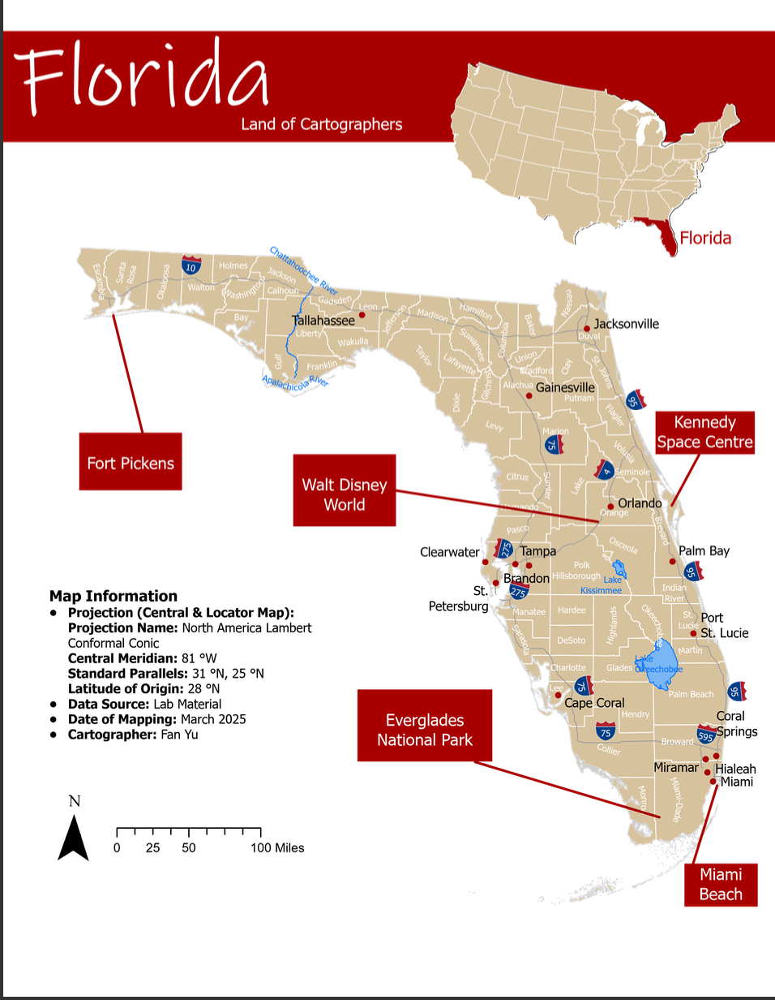
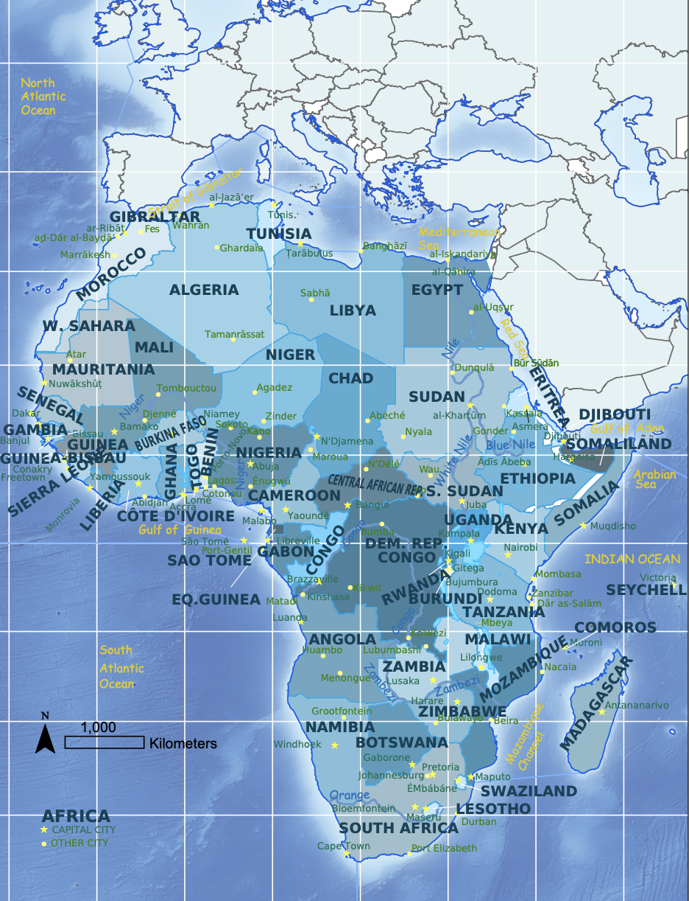

Florida Tourism Brochure map (ArcGIS Pro)

Africa Reference Map (ArcGIS Pro,Illustrator)

Choropleth Map of NZ Victimisations (ArcGIS Pro,Illustrator)

Mapping the Tree Canopy Cover of the University of Canterbury (ArcGIS Pro,LiDAR data source,OBIA method)